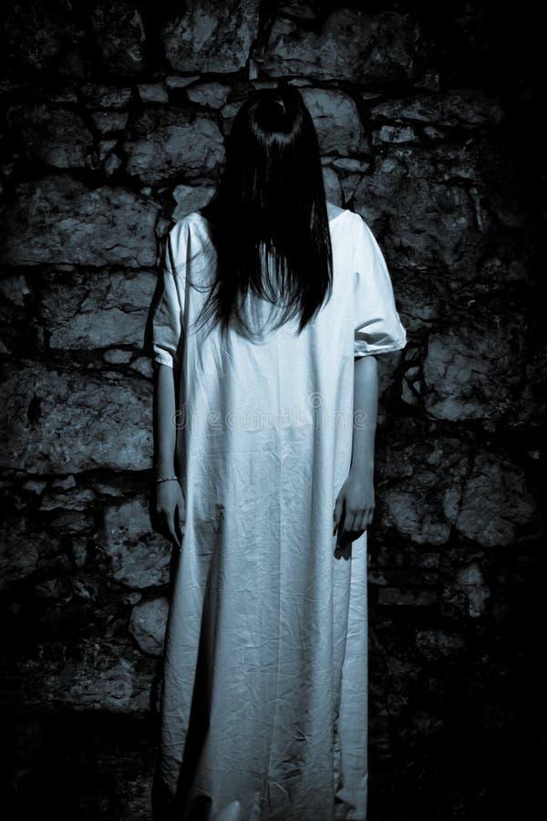
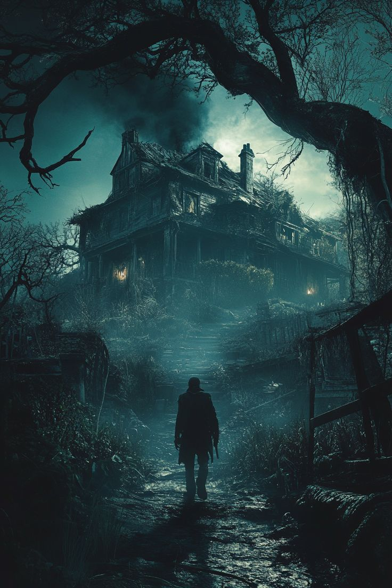
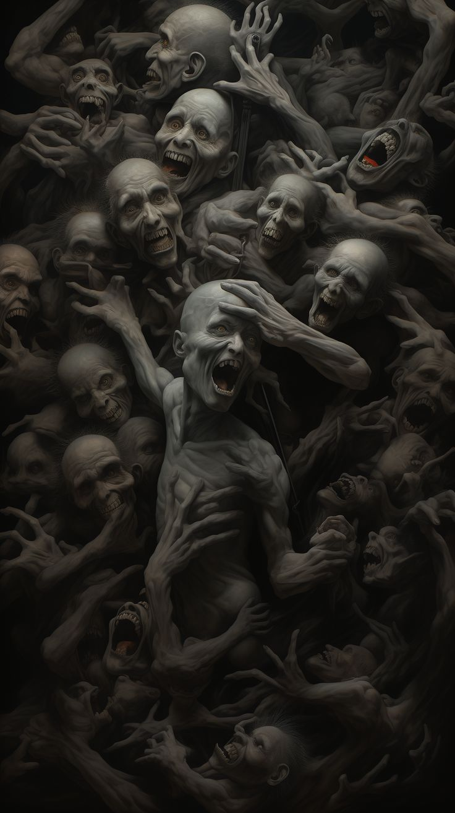
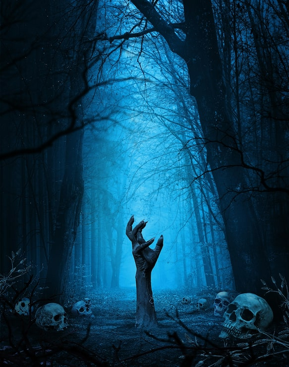
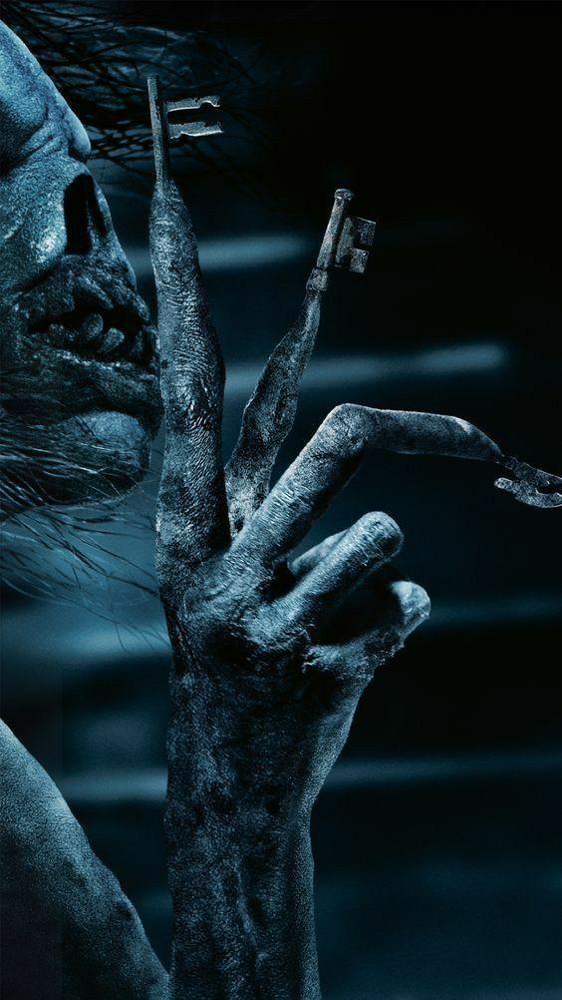
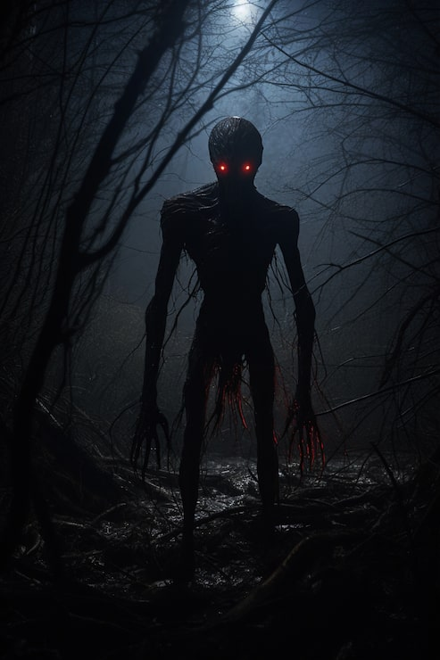

The Last Road
The final road is visible only after sunset. It appears where no road existed the night before.
Beyond the last light
Kingdom of the Damned
Where no sun has ever risen, and no prayer has ever been answered — a throne of bone sits at the center of the world's oldest nightmare, and upon it sits Piuu.
I · The first wound
Piukistan is not hidden behind an ordinary mountain range, nor fenced behind a border that any army could patrol. It is a wound torn directly into the world — an impossible kingdom occupying the space between the final heartbeat of one reality and the first breath of another.
There is no morning in Piukistan. The sky hangs permanently beneath a bruise-colored dusk, and the clouds drag across the heavens like vast pieces of mourning cloth. Rivers run black beneath stone bridges. Forests grow without permission. Bells ring in towers whose foundations have vanished.
Travelers who find the old road often report hearing their own names whispered from the trees. They follow the sound because the human mind is unreasonably curious about the familiar. The road rewards that curiosity by returning them to where they started — older, colder, and unable to remember why they wanted to leave.
At the heart of this sunless territory stands Throne Hollow. There, beneath a broken crown of stone, the Bone Throne waits for the sovereign who commands every curse that survived the first darkness.
The final road is visible only after sunset. It appears where no road existed the night before.
The river has no source. The current moves toward the center of Piukistan, carrying broken lanterns and forgotten vows.
Every ancient order came to the Gathering of the Damned. No faction arrived without bringing a tribute of fear.
Thousands of pale fragments were fused into the throne. Each fragment remembers the voice of its owner.
The provinces swore themselves into one dominion. Their separate curses became a single command.
Piukistan does not expand like an empire. It simply becomes nearer whenever the living forget to look behind them.

II · The sovereign
Piuu is spoken of in lower voices than the dead themselves use. Her presence is imagined as a pale figure framed by long black hair, a silhouette that seems almost human until the darkness around it begins moving in directions the body never did. She does not need to chase anyone. Fear travels ahead of her.
The ancient orders describe her coronation differently, yet every account agrees on one fact: the Bone Throne recognized her before the court did. When Piuu placed one hand upon the throne, the candles in Throne Hollow burned black, the bells stopped, and every creature in the chamber lowered its head.
“A throne of bone is still a throne. It only asks a harsher question of the one who sits upon it.”Fragment of the Hollow Chronicle
Infernal hosts answer to her summons, their orders carried through cracks in stone and smoke.
Piuu speaks a language older than written history. A single sentence is enough to turn a blessing into a burden.
She can cross from one shadow to another without crossing the space between them.
The forests, marshes, ash plains, and silent towers shift according to her will.
Forgetting Piuu is impossible once the kingdom has spoken her name to you.
III · Six dominions
Maps disagree about the number because Piukistan is larger at night. Six names appear in the royal archives; five are called provinces, while the sixth is Throne Hollow — the seat from which all five are bound.
Grey plains where warm ash falls from a sky without fire. Footprints survive here for centuries.
Black water, drowned reeds, and paths that shift after every spoken sentence.
A forest of hooked vines where the witches gather around circles older than the trees.
A silver-gray fog covers the land. The voices inside it know things you never told anyone.
Pale branches rise from ancient remains, ringing softly whenever someone dies beyond the boundary.
The sunless center of the realm. At midnight, the Bone Throne can be heard breathing.
IV · Forbidden sightings
The kingdom is remembered through fragments: trees bent by invisible weather, ruins swallowed by darkness, stone paths disappearing into mist, and shapes that remain just outside the frame.





V · The orders
Six orders are permitted to stand within the inner court. They do not share loyalty. They share fear of disappointing the throne.
Iron-tongued heralds carrying the sovereign's orders into places where ordinary messengers would die.
Restless spirits of the midnight roads, recognized by their laughter before they are seen.
Keepers of curse-script, thorn sigils, smoke rites, and the secret names of forbidden doors.
Predators of shadow who haunt thresholds and leave their victims unable to remember daylight.
Bound remnants of the dead, attached to vows that were never fulfilled and doors that never opened.
Silent sentinels sworn to the Bone Throne. Their armor is never removed inside Throne Hollow.
VI · Fragments of the royal record
The surviving pages do not form a clean history. They form a trail of warnings written by people who believed somebody else would be the one to read them.
An unnamed darkness appears in the oldest surviving inscription. It is described not as a creature, but as a place that has learned to move.
All waterways in the territory turn dark. The water becomes unnaturally still near moonless nights.
Devils, witches, spirits, chudhails, dayans, and the royal guard assemble beneath the ruined crown of Throne Hollow.
Piuu touches the Bone Throne. Every candle extinguishes simultaneously. When they return, their flames burn red.
The provinces lose their separate seals. A single sigil appears above every gate: a crown above a line of bone.
The chronicle ends mid-sentence. The final surviving words read: “She is still awake. The road is getting closer.”
One bell remains in Throne Hollow. It is never pulled by a hand. Its sound is heard only by those Piuu has noticed.
Every province contains a door that should not be there. None of them open from the same side twice.
When ordinary flame enters Piukistan, it burns normally for a moment and then remembers that it was supposed to be dark.
Before Piuu's reign, the royal crown sat without a head. After her arrival, the crown is never seen without a shadow beneath it.
VII · The binding
“By ash, by marsh, by thorn and veil and bone — every dark thing that walks answers to one throne. Piukistan does not end. It only waits.”